地政学
マンチェスターは首都ではないが、北イングランドの交通、大学、医療、メディア、文化を束ね、ロンドン一極集中への対案を示す。鉄道、空港、自治体連合を通じて、英国の地域格差と地方分権を具体的に映す場である。

🇬🇧 イギリス / 北西イングランド / World City Atlas
産業革命の工場都市は、綿工業の記憶、労働運動、移民の食と信仰、音楽とサッカー、大学と医療、メディア産業、雨の街路、再生する運河沿いを重ねて北イングランドの現在を映す。
都市の骨格
マンチェスターは、赤レンガの倉庫、鉄道駅、運河、大学、病院、スタジオ、クラブ、スタジアム、移民商店街が近い距離で重なる都市である。過去の産業力は、現在の労働、創造性、住宅再生を読むための地層になっている。
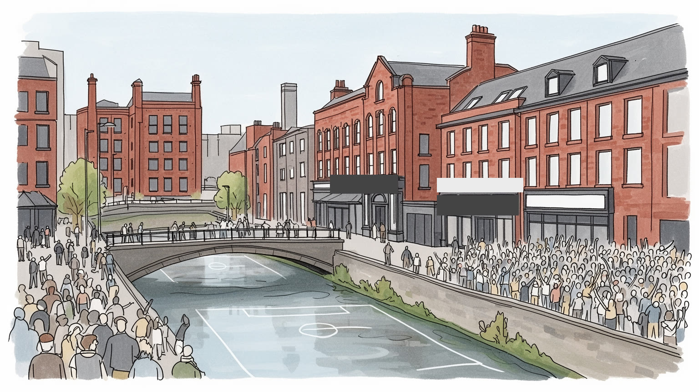
マンチェスターは首都ではないが、北イングランドの交通、大学、医療、メディア、文化を束ね、ロンドン一極集中への対案を示す。鉄道、空港、自治体連合を通じて、英国の地域格差と地方分権を具体的に映す場である。
綿工業の工場都市から、大学、医療、金融、メディア、技術、観光、小売、物流へ雇用は移ってきた。高技能職とサービス労働が同じ都市を支え、倉庫再利用、夜勤、学生アルバイト、移民労働が日常の経済を支える。
クラブ音楽、インディーロック、サッカー、劇場、博物館、大学の知が都市文化を広げる。英国国教会、カトリック、イスラム、ユダヤ教、ヒンドゥー教、シーク教などの礼拝空間も、移民史と近隣の暮らしを支える。
住民は雨具、トラム、バス、鉄道、学生街、市場、運河沿いの住宅、郊外のテラスハウスを使い分ける。旅行者は産業遺産、音楽の記憶、フットボール、現代建築、移民の食を歩き、働く北部都市の層に触れる旅をする。
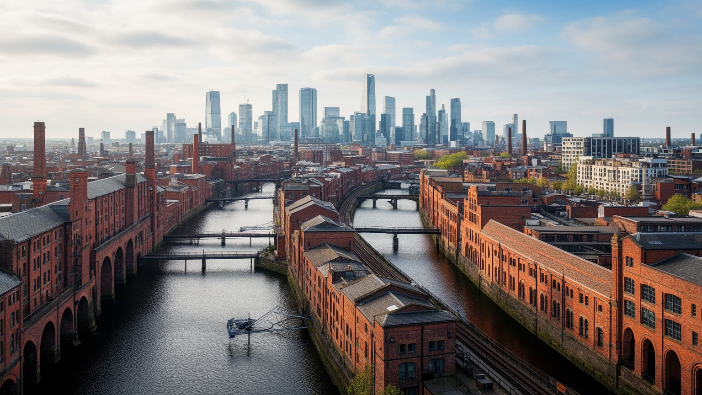
マンチェスターの都市地理は、産業革命の速度を今も街路に残している。内陸都市でありながら、運河、鉄道、倉庫、工場、労働者住宅を組み合わせ、港から届く綿花と内陸の市場を結んだ。中心部の赤レンガの建物、アーチの下の店舗、旧貨物線、再利用された倉庫は、単なる懐古ではなく、土地利用の骨格そのものである。鉄道駅はロンドン、リバプール、リーズ、スコットランドへ人を流し、空港は欧州やアジアとの結節点を作る。運河沿いの再開発は、オフィス、ホテル、学生住宅、飲食店を呼び込む一方、かつての工場労働の記憶を景観商品に変えてきた。都市の境界はサルフォード、トラフォード、ストックポート、オールダムなど周辺自治体と連続し、行政名だけでは通勤圏や生活圏を説明できない。マンチェスターを読むには、中心部の新しい高層ビルと、北部の旧工業地、郊外のテラスハウス、空港周辺の物流を同じ地図に置く必要がある。道路や軌道の配置は、どの地区が職場へ近く、どの地区が長い乗り換えを迫られるかも決めている。さらに水路の縁や高架下は、歩行者空間、夜の商い、防犯、住宅価格を左右する細かな境界にもなる。その差は家賃にも表れる。雨に濡れる煉瓦と鉄道高架は、過去の象徴であると同時に、再生都市の資産、移動の制約、住宅投資の圧力を示す現在のインフラでもある。
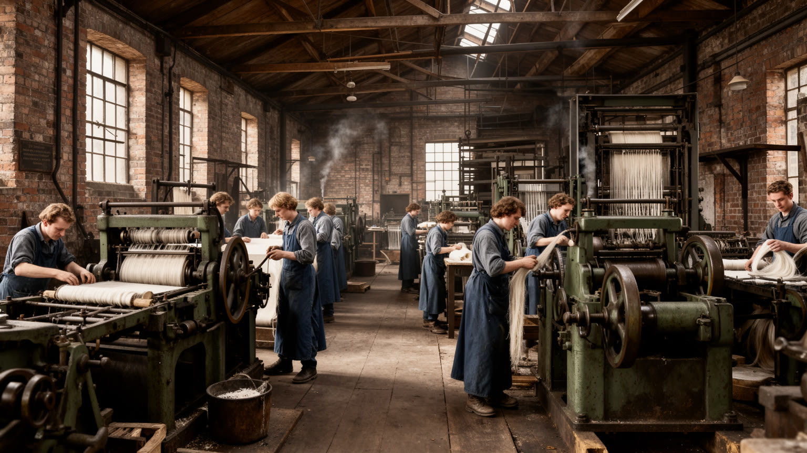
マンチェスターは「コットノポリス」と呼ばれた時代に、世界の綿工業を動かす象徴的な都市になった。紡績機械、蒸気機関、倉庫、取引所、銀行、保険、鉄道が結びつき、原料は大西洋世界から届き、製品は帝国の市場へ出ていった。この発展は技術革新と都市成長を生んだが、同時に植民地支配、奴隷制に支えられた綿花、長時間労働、児童労働、劣悪な住環境を含んでいた。工場の鐘と機械の音は、労働規律を都市の時間に変え、労働者階級の政治意識、協同組合、労働組合、新聞、教育運動を育てた。ピータールーの記憶や参政権運動は、富を生む都市が同時に権利を求める都市でもあったことを示す。現在のミュージアムや保存倉庫は、産業遺産を学ぶ入口だが、展示物として見るだけでは足りない。綿工業の記憶は、グローバルな供給網、低賃金労働、消費、環境負荷を考える手がかりにもなる。布地の品質を測る商人、機械を直す職人、港から荷を運ぶ人、家で縫製を担う人の仕事まで含めて、都市の富は多層の労働で作られた。現在のファッション産業や通販倉庫を見る時にも、この歴史は遠い過去ではなく、価格と労働の関係を問う比較軸になる。古い工場がロフトやスタジオへ変わる時、その壁には資本、技術、搾取、抵抗、創造性が重なっている。マンチェスターの産業史は成功物語だけでなく、現代の働き方を問い直すための長い記録である。
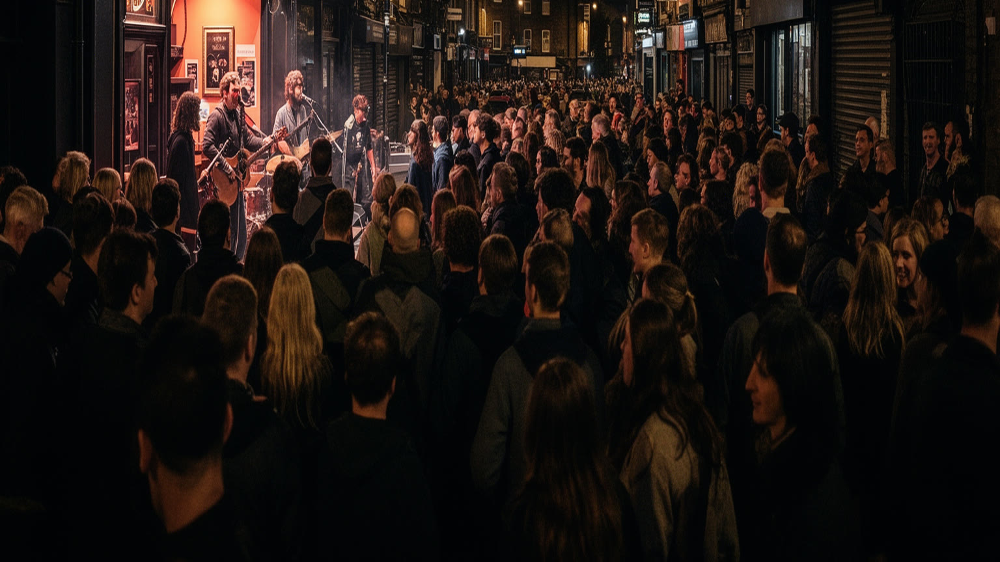
マンチェスターの音楽文化は、工業都市の空気、学生人口、安い練習場所、クラブ、移民の音、独立系レーベル、ラジオ、労働者階級の言葉から生まれた。パンク、ポストパンク、インディーロック、エレクトロニック、レイヴ、ヒップホップ、グライム、南アジア系やカリブ系の音楽は、都市の暗さや雨を単なる背景ではなく、表現の材料にしてきた。ライブハウスやクラブは観光名所である前に、若者が場所を借り、音を出し、友人を作り、政治やファッションを試す公共圏である。だが家賃上昇、騒音規制、再開発、夜間交通、警備費は小さな会場を圧迫する。都市が音楽のブランドを使うほど、その音を生む不安定な労働や安い空間を守れるかが問われる。マンチェスターの音楽を読むには、有名バンドの足跡だけでなく、移民地区の店、大学の練習室、週末のクラブ列、レコード店、配信スタジオを見る必要がある。音楽教育、地域ラジオ、小さなフェス、郊外の練習場も、次の世代が都市の音を作る足場になる。行政の文化政策や開発計画が、騒音を許す場所と静かな住環境をどう調整するかも大きい。音楽は都市の名声を今も世界へ運ぶが、同時に住民が自分の声で街を語る方法でもある。雨の夜道を歩く観客、深夜のバスを待つスタッフ、翌朝に床を掃除する人まで含めて、文化都市のリズムは続いている。
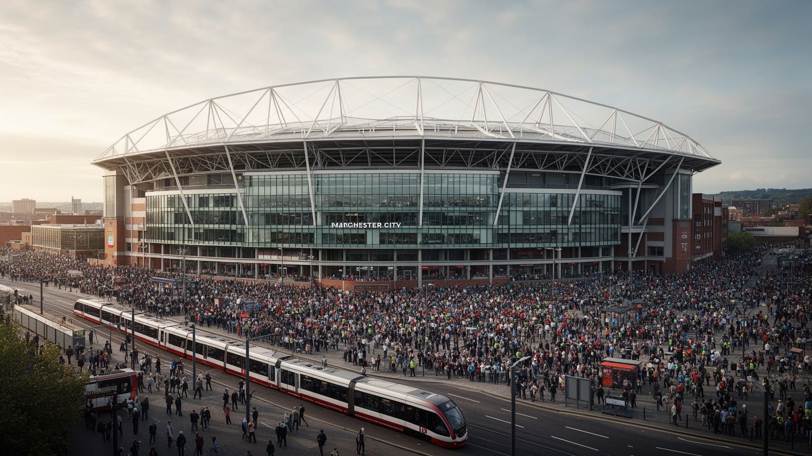
マンチェスターの名は、フットボールを通じて世界中の人に届く。赤と青の二つの巨大クラブは、労働者地区、郊外、学校、パブ、家族の記憶を起点にしながら、テレビ放映権、国際スポンサー、観光、投資資本を抱える世界産業へ変わった。試合日はスタジアム周辺だけでなく、トラム、鉄道、ホテル、飲食店、警備、清掃、配達、土産物店、賭け事、配信メディアを動かす。クラブは地域の誇りを育て、慈善活動や青少年育成にも関わるが、チケット価格やグローバル化は地元のファンを遠ざけることもある。勝敗の熱狂は都市を一つにするようでいて、階級、世代、地域、移住者の経験によって見え方が違う。スタジアム再開発は周辺の道路や住宅、公共交通を変え、商業施設を呼び込み、古い街区の地価にも影響する。マンチェスターをサッカー都市として読むなら、クラブの栄光だけでなく、下部リーグ、女子サッカー、少年チーム、パブで観る人、試合日に働く人の時間を含める必要がある。学校の校庭や地域クラブでボールを蹴る子どもたちは、世界的なブランドとは違う近さで競技を支えている。観光客がスタジアムを訪れるほど、地元交通と近隣商店への配慮も欠かせない。フットボールは娯楽であり、都市経済であり、地域の記憶であり、世界市場にさらされる公共感情でもある。赤と青の色分けは、街の対立だけでなく、共通の言語を作る装置でもある。
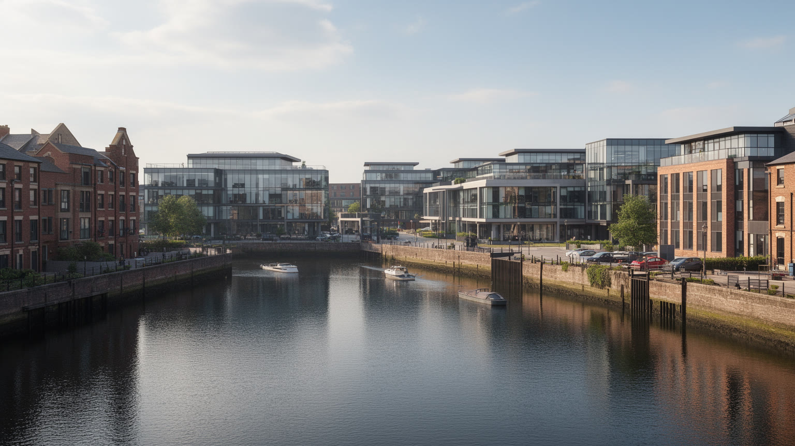
マンチェスター都市圏の現代的な顔は、メディア、デジタル、大学研究、医療技術の集積にある。サルフォードのスタジオ群は、放送、制作、編集、ゲーム、広告、デザイン、イベント運営、警備、清掃、飲食を結び、ロンドン中心だった英国メディアの重心を北西へ動かした。中心部にはスタートアップ、共同作業空間、金融技術、データ企業、音楽関連の制作会社が集まり、学生や卒業生が労働市場を厚くする。だが創造産業は自由な働き方のイメージと裏腹に、短期契約、無給に近いインターン、長時間労働、家賃の高い都心居住を伴いやすい。技術産業の成長は、古い倉庫を魅力的なオフィスへ変え、カフェや集合住宅を呼ぶ一方、低所得の近隣を押し出す力にもなる。メディア都市を読むには、華やかなスタジオだけでなく、地方の声を誰が編集し、どの地域が画面に映り、どの労働が外注されるのかを見る必要がある。大学の研究、病院のデータ、企業投資、公共放送の使命が交差する場所で、マンチェスターは北部都市の再産業化を試している。公共交通や職業訓練が弱ければ、新しい職場は近隣の若者に届かないまま都市の外から人を集めるだけになる。通信網、スタジオ、研究施設への投資を、地域の学校や中小企業へ接続する工夫も必要である。問題は新しい産業が増えることだけでなく、その利益が教育、住宅、交通、地域の小企業へ広がるかである。
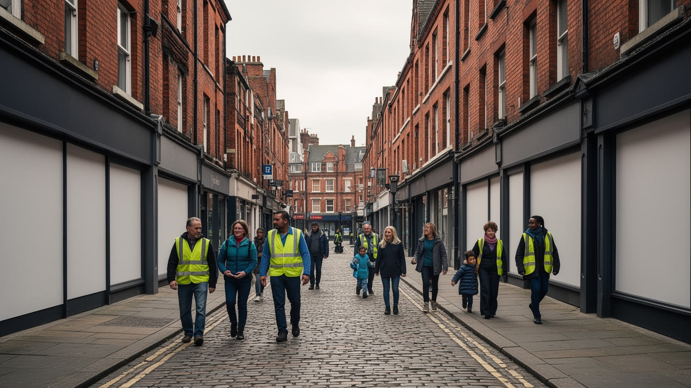
マンチェスターは、アイルランド、ユダヤ人、カリブ系、南アジア系、東欧、アフリカ、中東、中国系の移住を重ねてきた都市である。工場、建設、病院、大学、飲食、小売、清掃、介護、配送、タクシー、倉庫、ITの仕事は、移民とその子孫なしには語れない。カリー・マイルの食堂、モスク、教会、シナゴーグ、寺院、食料品店、理髪店、送金店は、観光客に多文化の雰囲気を見せるだけでなく、家族、言語、仕事探し、教育、信仰を支える生活インフラである。一方で、移民労働は低賃金、資格の認定、差別、過密住宅、在留資格、医療アクセス、学校支援の問題を抱えることがある。都市の多様性を祝う言葉は、厨房、夜勤、介護現場、配送ルートで働く人の条件を見なければ薄くなる。マンチェスターの移民史は、産業都市が世界から労働力を吸い寄せた歴史であり、同時に新しい文化、政治、宗教、食を生んだ歴史でもある。近隣の店や礼拝所は、見知らぬ都市で安心して話せる場所になり、世代を越えた教育の足場にもなる。学校で複数の言語が聞こえ、病院で通訳が必要になり、商店街で故郷の食材が売られることは、都市制度が多様性へ対応しているかを示す。祭りや市場は住民同士が顔を合わせる場でもある。多文化都市の強さは、違いを看板にすることではなく、雇用、住宅、学校、医療で暮らしの権利を支える制度に現れる。
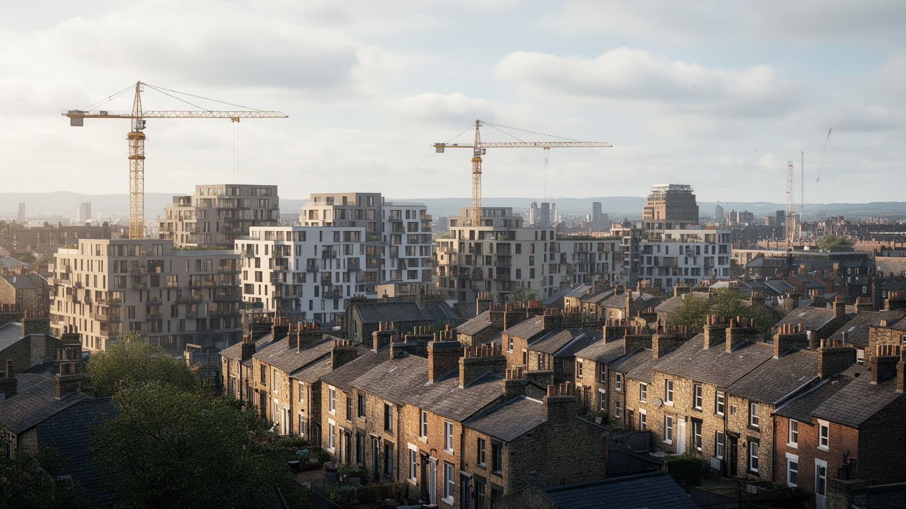
マンチェスターの再生は、倉庫の改装、高層住宅、ホテル、オフィス、学生寮、運河沿いの遊歩道として目に見える。中心部の人口は増え、夜も人が歩き、飲食店や文化施設が集まるようになった。だが都市の成功は住宅費を押し上げ、低所得世帯、若い家族、サービス労働者、移民世帯を中心部から遠ざける。古いテラスハウスの地区では、断熱の弱さ、湿気、燃料費、大家の管理、空き家、老朽化が生活の質を左右する。再開発地区は安全で便利に見えるが、公共空間が商業施設の延長になり、見守りや排除の基準が強まることもある。学生住宅の増加は大学都市の活力を支える一方、近隣の家賃や店舗構成を変える。住宅問題は建物の数だけでなく、交通費、学校、医療、緑地、仕事の場所と結びつく。マンチェスターを暮らしの都市として読むには、中心部の新築タワーと、周辺の古い住宅地を分けずに見る必要がある。公共住宅、家賃規制をめぐる議論、空き地の活用、古い家の断熱改修は、景観以上に生活の持続性を左右する。近隣の図書館、保育、診療所、安い食料品店が残るかどうかも、住み続けやすさを決める。都市再生が本物になるのは、投資家にとって魅力的な景観を作る時ではなく、清掃、介護、飲食、教育、病院で働く人が通勤しやすく、暖かく、手頃な家に住める時である。雨の多い街では、屋根、窓、断熱、バス停の屋根までが公平性の問題になる。
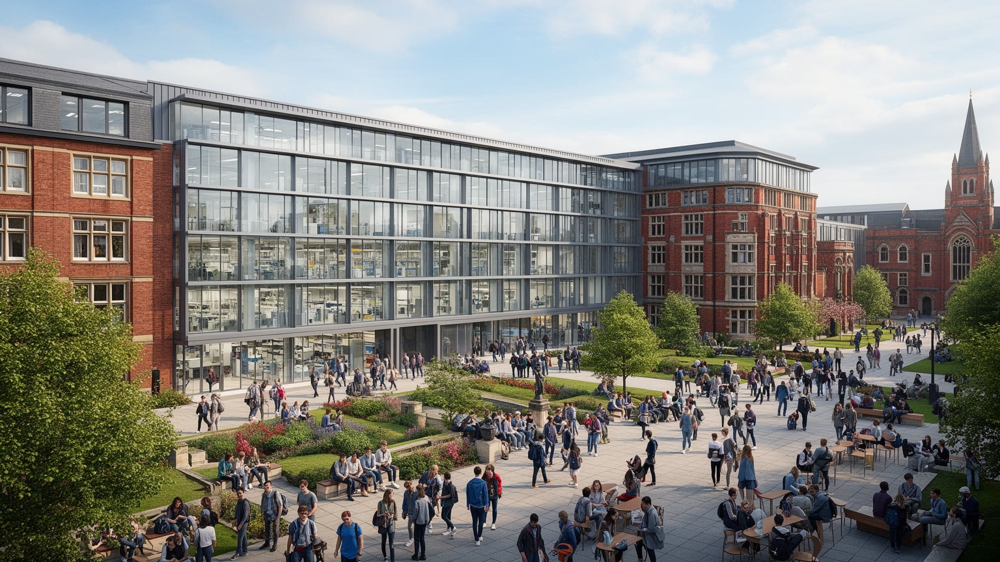
マンチェスターは大学と医療の都市でもある。大規模な大学、研究所、病院、学生街、図書館、実験施設は、雇用、国際交流、住宅需要、文化イベント、夜間経済を支えている。学生は世界中から集まり、都市に若さと多言語性をもたらす一方、学生向け住宅、短期滞在、アルバイト市場、近隣の騒音や家賃に影響する。大学研究は材料科学、コンピューター、都市政策、医学、社会科学などで評価され、企業や病院と結びついて新しい産業を育てる。医療機関は地域の命を守ると同時に、看護師、医師、清掃、調理、事務、研究補助、介護、救急の大きな労働市場である。だが健康格差は都市の所得、住宅、空気、食、労働条件と深く結びつく。大学が輝く都市であっても、近くの住民が十分な医療や教育へ届かないなら、知識都市の利益は偏る。マンチェスターの大学と病院を読むには、キャンパスの建物だけでなく、通学する学生、夜勤の医療職、実験を支える技術員、患者家族の交通、地域学校との関係を見る必要がある。図書館や公開講座、地域クリニック、職業訓練は、専門知を近隣へ開く窓にもなる。奨学金や実習先の配置も、地域との距離を縮める。知識は都市を外へ開く力だが、地元の子どもが進学し、働き、健康に暮らす通路になってこそ公共性を持つ。研究成果と近隣の生活改善をどうつなぐかが、この都市の成熟を測る重要な条件である。
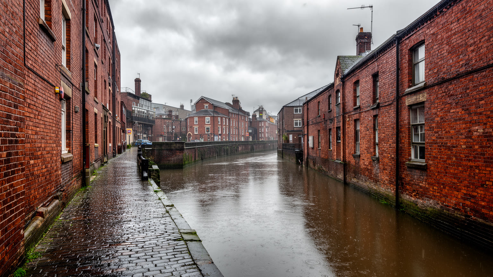
マンチェスターの気候は、極端な寒暑よりも、雲、雨、風、湿気が日常のリズムを作る。大西洋からの湿った空気とペナイン山脈に近い地形は、街に変わりやすい天気をもたらし、通勤者は上着、傘、防水靴、屋根のあるバス停を自然に使い分ける。雨は都市のイメージを作り、音楽や写真の雰囲気にも影響するが、住宅の湿気、古い建物の維持、道路の水たまり、運河沿いの安全、低地の浸水リスクにもつながる。気候変動は、より強い雨、熱波、排水負荷、緑地の不足として現れ、涼しいはずの北部都市にも新しい備えを求めている。街路樹、透水性舗装、公園、運河の水辺、断熱改修、公共交通、徒歩圏の施設は、気候適応の一部である。特に低所得世帯や高齢者、屋外労働者、学生、夜勤の人にとって、雨と寒さ、暖房費、移動の待ち時間は健康に直結する。マンチェスターの雨を観光的な味わいとして楽しむだけではなく、都市インフラの条件として読む必要がある。学校の登下校や試合日の移動、深夜の帰宅も、天気によって安全性が変わる。川や運河に近い低地では、排水計画と警報の分かりやすさが生活を守る。濡れた煉瓦や曇天の美しさは確かに魅力だが、その景観を保つには、排水、住宅修繕、緑地、交通の設計が今も欠かせない。気候は背景ではなく、働き方と住み方を形づくる都市の制度である。
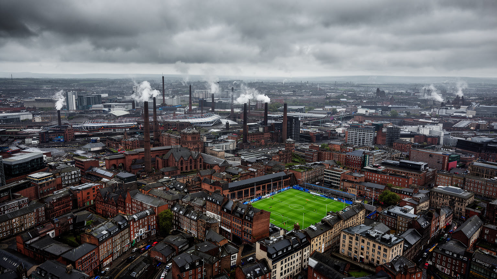
マンチェスターは、産業革命の都市、音楽の都市、サッカーの都市として分かりやすく語られる。しかし、その三つの看板だけでは、都市の全体は見えない。綿工業の富は世界経済と植民地の矛盾に結びつき、労働運動と民主主義の要求を生んだ。赤レンガの倉庫は文化施設や住宅へ再利用されるが、そこで誰が暮らせるのかは住宅市場が決める。音楽と夜の文化は都市の自由を象徴するが、小さな会場や不安定なスタッフなしには続かない。サッカーは世界的な名声をもたらすが、地元のファン、試合日の労働、周辺開発の問題を含む。大学、医療、メディア、技術は新しい雇用を作る一方、格差や通勤圏の広がりを解決するとは限らない。移民の食と信仰は都市を豊かにするが、低賃金や差別を見ない多文化礼賛では足りない。雨と曇りは雰囲気であると同時に、住宅、交通、気候適応の実務である。マンチェスターを読むことは、北イングランドの過去を懐かしむことではなく、産業の記憶を使って現在の都市政策を考えることである。旅行者の短い滞在でも、駅から運河、大学、カリー店、スタジアムへ歩くと、産業都市が知識都市へ変わる途中の矛盾が見えてくる。工場、クラブ、スタジアム、病院、大学、モスク、テラスハウス、トラム停留所を同じ地図に置いた時、この都市の重要性は規模ではなく、働く人と文化が都市を作り替え続ける力に現れる。